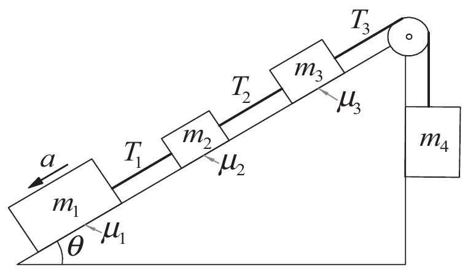

Doğrusal Denklem Sistemleri
Bir adet katsayı matrisine sahip olan denklem setleri olabilir. Örneğin;
\[ A \vec{x}= \vec{b} \qquad \text{veya} \qquad A \vec{y} = \vec{c} \]
Bilgisayarsal olarak ekonomik olmak için bu denklem sistemlerini birleştirebiliriz.
\[ AX=B \]
\[ X= [x_{1}, x_{2}, \dots, x_{n}, y_{1}, y_{2}, \dots, y_{m}] B= [b_{1}, b_{2}, \dots, b_{n}, c_{1}, c_{2}, \dots, c_{m}] \]
Bu birleştirilmiş denklemleri Gauss eleme yöntemi ile çözebiliriz. ## Örnek
Aşağıdaki denklem sistemini çözelim.
\[ A= \begin{bmatrix} 4 & 3 \\ 2 & 1 \end{bmatrix} \]
\[ B= \begin{bmatrix} 1 & -2 \\ 2 & 3 \end{bmatrix} \]
Burada çözmemiz gereken denklemler şu şekildedir.
\[ A \begin{bmatrix} x_{1} \\ x_{2} \end{bmatrix}= \begin{bmatrix} 1 \\ 2 \end{bmatrix} \]
ve
\[ A \begin{bmatrix} y_{1} \\ y_{2} \end{bmatrix}= \begin{bmatrix} -2 \\ 3 \end{bmatrix} \]
Katsayı matrisini üst köşegen matrise çevirmek için Gauss eleme yöntemini kullanalım. Burada daha önceden gördüğümüz Gauss eleme yöntemine ek olarak sağ tarafteki sonuç vektörü yerine sonuç matrisi kullanacağız.
ADIM 1
\[\text{Eq}(2) - ~(0.5)~ \text{Eq}(1) \rightarrow \text{Eq}(2)\]
\[ \begin{bmatrix} 4 & 3 & | & 1 & -2 \\ 2 & 1 & | & 2 & 3 \end{bmatrix} \]
\[ \begin{bmatrix} 4 & 3 & | & 1 & -2 \\ 0 & -0.5 & | & 1.5 & 4 \end{bmatrix} \]
ADIM 2
Geri yerine kotma metodunu uygulayalım.
\[ -0.5x_{2} = 1.5 \rightarrow x_{2} = -3\\ -0.5y_{2} = 4 \rightarrow y_{2} = -8 \]
\[ 4x_{1}-3= 1 \rightarrow x_{1} = 1\\ 4y_{1}-3= -2 \rightarrow y_{1} = -1 \]
Bu durumda çözüm matrisi aşağıdaki gibi olur.
\[ \begin{bmatrix} x_{1} & y_{1} \\ x_{2} & y_{2} \end{bmatrix} = \begin{bmatrix} 1 & -1 \\ -3 & -8 \end{bmatrix} \]
LU Ayrıştırma
Gösterilebilinir ki herhangi bir \(A\) matrisi, üst ve alt üçgensel matrisin çarpımı şeklinde yazılabilir. Yani \(A=LU\) şeklinde yazabiliriz. Bu işleme LU ayrıştırma veya LU faktorizasyonu denir. Bu ayrıştırma işleminden sonra Gauss eleme yöntemi ile sistem çözülür.
- Ayrıştırma yöntemi LU, biricik (unique) değildir.
- İki çeşit ayrıştırma metodu vardır.
- Doolittle yöntemi
- Cholesky yöntemi
LU’nun Gauss metoduna göre en büyük avantajı \(A\vec{x}=\vec{b}\) denkleminde \(\vec{b}\) vektöründen bağımsız olarak çözüm kolayca bulunabilir.
Doollittle Yöntemi
Örneğin \(3x3\) bir matris olsun. Bu durumda
\[ L= \begin{bmatrix} 1 & 0 & 0 \\ l_{21} & 1 & 0 \\ l_{31} & l_{32} & 1 \end{bmatrix} \qquad \text{,} \qquad U= \begin{bmatrix} u_{11} & u_{12} & u_{13} \\ 0 & u_{22} & u_{23} \\ 0 & 0 & u_{33} \end{bmatrix} \]
olmak üzere \(A\) matrisi aşağıdaki gibi yazılabilir.
\[ A= \begin{bmatrix} u_{11} & u_{12} & u_{13} \\ l_{21}u_{11} & l_{21}u_{12}+u_{22} & l_{21}u_{13}+u_{23} \\ l_{31}u_{11} & l_{31}u_{12}+l_{32}u_{22} & l_{31}u_{13}+l_{32}u_{23}+u_{33} \end{bmatrix} \]
Bu durumda \(A\) matrisinin elemanları aşağıdaki gibi olur.
\[ A_{11}= u_{11} \qquad \text{,} \qquad A_{12}= u_{12} \qquad \text{,} \qquad A_{13}= u_{13}\\ A_{21}= l_{21}u_{11} \qquad \text{,} \qquad A_{22}= l_{21}u_{12}+u_{22} \qquad \text{,} \qquad A_{23}= l_{21}u_{13}+u_{23}\\ A_{31}= l_{31}u_{11} \qquad \text{,} \qquad A_{32}= l_{31}u_{12}+l_{32}u_{22} \qquad \text{,} \qquad A_{33}= l_{31}u_{13}+l_{32}u_{23}+u_{33} \]
Yukarıdaki işlemleri sırasıyla yaparsak L ve U matrislerinin elemanlarınlarını bulabilir.
Çözüm Eldesi
Bir tane denklem setimiz olsun.
\[ A \vec{x}= \vec{b} \]
- \(A\) matrisini LU faktorizasyonu yapmamız gerekir. Yani \(A=LU\) şeklinde yazmalıyız.
\[ A \vec{x}= \vec{b} \\ LU \vec{x}= \vec{b} \\ L(U \vec{x})= \vec{b} \\ L \vec{y}= \vec{b} \]
Burada \(U\vec{x}\equiv \vec{y}\) yanımlaması yaptık. Ancak \(\vec{y}\) vektörünü bilmiyoruz.
- \(L \vec{y}= \vec{b}\) denklemini çözmemiz gerekir. Çözüm vektörü \(\vec{y}\)’yi buluruz.
- \(\vec{y}\) vektörünü elde ettikten sonra \(U\vec{x}\equiv \vec{y}\) denklemini çözmemiz gerekir. Çözüm vektörü \(\vec{x}\)’i buluruz.
Örnek
Aşağıdaki denklem setini Doollittle LU yöntemi ile çözelim.
\[ \begin{bmatrix} 2 & 3 \\ 4 & 5 \end{bmatrix} \begin{bmatrix} x_{1} \\ x_{2} \end{bmatrix}= \begin{bmatrix} 8 \\ 9 \end{bmatrix} \]
Çözüme başlarken \(A\) matrisini LU faktorizasyonu yapalım.
ADIM 1
\[ \begin{bmatrix} A_{11} & A_{12} \\ A_{21} & A_{22} \end{bmatrix} = \begin{bmatrix} 1 & 0 \\ l_{21} & l_{22} \end{bmatrix} \begin{bmatrix} u_{11} & u_{12} \\ 0 & u_{22} \end{bmatrix} \\ \begin{bmatrix} 2 & 3 \\ 4 & 5 \end{bmatrix} = \begin{bmatrix} u_{11} & u_{12} \\ l_{21}u_{11} & l_{21}u_{12}+u_{22} \end{bmatrix} \]
Bu durumda
\[ \begin{align*} u_{11}=& 2 \\ u_{12}=& 3 \\ l_{21}u_{11}= 4 \rightarrow l_{21}=& 2 \\ l_{21}u_{12}+u_{22}= 5 \rightarrow u_{22}=& -1 \end{align*} \]
seklinde olur.
Bu durumda L ve U matrisleri aşağıdaki gibi olur.
\[ L= \begin{bmatrix} 1 & 0 \\ 2 & 1 \end{bmatrix} \qquad \text{,} \qquad U= \begin{bmatrix} 2 & 3 \\ 0 & -1 \end{bmatrix} \]
ADIM 2
Çözmemiz gereken denklemi tekrar yazalım.
\[ A \vec{x}= \vec{b} \\ LU \vec{x}= \vec{b} \\ L(U \vec{x})= \vec{b} \\ L \vec{y}= \vec{b} \]
Önce \(L \vec{y}= \vec{b}\) denklemini çözelim.
\[ \begin{bmatrix} 1 & 0 \\ 2 & 1 \end{bmatrix} \begin{bmatrix} y_{1} \\ y_{2} \end{bmatrix}= \begin{bmatrix} 8 \\ 9 \end{bmatrix} \]
Burada, ileri yerine koyma yöntemiyle çözüm kolayca aşağıdaki gibi bulunur.
\[ \begin{align*} y_{1}=& 8 \\ y_{2}=& 9-2y_{1} \rightarrow y_{2}= 9-2(8) \rightarrow y_{2}= -7 \end{align*} \]
\(\vec{y}\) vektörünü elde ettik.
\[ \vec{y}= \begin{bmatrix} 8 \\ -7 \end{bmatrix} \]
ADIM 3
Şimdi \(U\vec{x}\equiv \vec{y}\) denklemini çözelim.
\[ U\vec{x}= \vec{y} \\ \begin{bmatrix} 2 & 3 \\ 0 & -1 \end{bmatrix} \begin{bmatrix} x_{1} \\ x_{2} \end{bmatrix}= \begin{bmatrix} 8 \\ -7 \end{bmatrix} \]
Bu denklemde de geri yerine koyma yöntemiyle \(\vec{x}\) çözümü kolayca aşağıdaki gibi bulunur.
\[ \begin{align*} x_{2}=& 7 \\ 2x_{1}+3x_{2}=8 \rightarrow x_{1}=& -6.5 \end{align*} \]
Bu durumda çözüm vektörü aşağıdaki gibi olur.
\[ \vec{x}= \begin{bmatrix} -6.5 \\ 7 \end{bmatrix} \]
Alıştırma
Aşağıdaki denklemi Doollittle yöntemi ile çözün.
\[ \begin{bmatrix} 4 & -2 & 1 \\ -2 & 4 & -2 \\ 1 & -2 & 4 \end{bmatrix} \begin{bmatrix} x_{1} \\ x_{2} \\ x_{3} \end{bmatrix} = \begin{bmatrix} 11 \\ -16 \\ 17 \end{bmatrix} \]
Çözüm
ADIM 1
Daha önceden \(3x3\) boyutunda bir matrisi nasıl LU faktorizasyonu yapacağımızı gördük. Bu durumda \(A\) matrisini aşağıdaki gibi yazabiliriz.
\[ A_{11}= u_{11} \qquad \text{,} \qquad A_{12}= u_{12} \qquad \text{,} \qquad A_{13}= u_{13}\\ A_{21}= l_{21}u_{11} \qquad \text{,} \qquad A_{22}= l_{21}u_{12}+u_{22} \qquad \text{,} \qquad A_{23}= l_{21}u_{13}+u_{23}\\ A_{31}= l_{31}u_{11} \qquad \text{,} \qquad A_{32}= l_{31}u_{12}+l_{32}u_{22} \qquad \text{,} \qquad A_{33}= l_{31}u_{13}+l_{32}u_{23}+u_{33} \]
Bu durumda
\[ \begin{align*} u_{11}=& 4 \\ u_{12}=& -2 \\ u_{13}=& 1 \\ l_{21}u_{11}= -2 \rightarrow l_{21}=& -0.5 \\ l_{21}u_{12}+u_{22}= 4 \rightarrow u_{22}=& 3 \\ l_{21}u_{13}+u_{23}= -2 \rightarrow u_{23}=& -1.5 \\ l_{31}u_{11}= 1 \rightarrow l_{31}=& 0.25 \\ l_{31}u_{12}+l_{32}u_{22}= -2 \rightarrow l_{32}=& -0.5 \\ l_{31}u_{13}+l_{32}u_{23}+u_{33}= 4 \rightarrow u_{33}=& 3 \end{align*} \]
ADIM 2
Çözmemiz gereken denklemi tekrar yazalım.
\[ A \vec{x}= \vec{b} \\ LU \vec{x}= \vec{b} \\ L(U \vec{x})= \vec{b} \\ L \vec{y}= \vec{b} \]
Önce \(L \vec{y}= \vec{b}\) denklemini çözelim.
\[ \begin{bmatrix} 1 & 0 & 0 \\ l_{21} & 1 & 0 \\ l_{31} & l_{32} & 1 \end{bmatrix} \begin{bmatrix} y_{1} \\ y_{2} \\ y_{3} \end{bmatrix}= \begin{bmatrix} 11 \\ -16 \\ 17 \end{bmatrix} \]
\[ \begin{bmatrix} 1 & 0 & 0 \\ -0.5 & 1 & 0 \\ 0.25 & -0.5 & 1 \end{bmatrix} \begin{bmatrix} y_{1} \\ y_{2} \\ y_{3} \end{bmatrix}= \begin{bmatrix} 11 \\ -16 \\ 17 \end{bmatrix} \]
İleri yerine koyma yöntemiyle \(\vec{y}\) çözümü aşağıdaki gibi bulunur.
\[ \begin{align*} y_{1}=& 11 \\ 0.5y_{1} + y_{2}= -16 \rightarrow y_{2}=& -10.5 \\ -0.25y_{1} - 0.5y_{2} + y_{3}= 17 \rightarrow y_{3}=& 9 \end{align*} \]
ADIM 3
Şimdi \(U\vec{x}\equiv \vec{y}\) denklemini çözelim.
\[ \begin{bmatrix} 4 & -2 & 1 \\ 0 & 3 & -1.5 \\ 0 & 0 & 3 \end{bmatrix} \begin{bmatrix} x_{1} \\ x_{2} \\ x_{3} \end{bmatrix}= \begin{bmatrix} 11 \\ -10.5 \\ 9 \end{bmatrix} \]
Geri yerine koyma yöntemiyle \(\vec{x}\) çözümü aşağıdaki gibi bulunur.
\[ \begin{align*} x_{3}=& 3 \\ 3x_{2} - 1.5x_{3}= -10.5 \rightarrow x_{2}=& -2 \\ 4x_{1} - 2x_{2} + x_{3}= 11 \rightarrow x_{1}=& 1 \end{align*} \]
Çözüm vektörü aşağıdaki gibi olur.
\[ \vec{x}= \begin{bmatrix} 1 \\ -2 \\ 3 \end{bmatrix} \]
Algoritma
2x2 Matris için,
\[ \begin{align*} A_{11} =& u_{11} \\ A_{12} =& u_{12} \\ A_{21} =& l_{21}u_{11} \\ A_{22} =& l_{21}u_{12}+u_{22} \end{align*} \]
3x3 Matris için,
\[ \begin{align*} A_{11} =& u_{11} \\ A_{12} =& u_{12} \\ A_{13} =& u_{13}\\ A_{21} =& l_{21}u_{11} \\ A_{22} =& l_{21}u_{12}+u_{22} \\ A_{23} =& l_{21}u_{13}+u_{23} \\ A_{31} =& l_{31}u_{11} \\ A_{32} =& l_{31}u_{12}+l_{32}u_{22} \\ A_{33} =& l_{31}u_{13}+l_{32}u_{23}+u_{33} \end{align*} \]
import numpy as np
# LU Ayrıştırma Yöntemi İle Denklem Çözme
# LU Ayrıştırma ile L, U elde etme
def LU_ayrisma(katsayiMat):
'''
LU ayrıştırma yöntemi ile katsayı matrisi ayrıştırılır.
coeffMat: Katsayı matrisi
'''
# Katsayı matrisinin boyutu kontrol edilir
n = int(len(katsayiMat))
if n != len(katsayiMat[0]):
print("Katsayı matrisinin boyutu uyumlu değil.")
return None
# Eğer katsayı matrisi int verilirse float'a çevrilmesi gerekir, çünkü
# LU ayrıştırma yapılırken katsayı matrisi ondalık sayı olabilir.
katsayiMat= katsayiMat.astype(float)
# L ve U matrisleri oluşturulur.
L= np.zeros((n,n))
U= np.zeros((n,n))
# LU ayrıştırma
for k in range(0, n):
L[k, k]= 1.0
# U matrisi
for j in range(k, n):
sum= 0.0
for s in range(0, k):
sum= sum + L[k, s]* U[s, j]
U[k, j]= katsayiMat[k, j]- sum
# L matrisi
for i in range(k+1, n):
sum = 0.0
for s in range(0, k):
sum = sum + L[i,s]* U[s,k]
L[i,k] = (katsayiMat[i,k] - sum)/ U[k,k]
return L, U
# LU Ayrıştırma Yöntemi Denklem Çözme
def LU_ayrisma_cozucu(katsayiMat, sonucVec):
'''[Numerical Methods in Engineering with Python 3]
LU ayrıştırma yöntemi ile denklem sistemini çözer.
katsayiMat: Katsayı matrisi
sonucVec: Sonuç vektörü
'''
# Katsayı matrisinin boyutu kontrol edilir
n = int(len(katsayiMat))
# LU ayrıştırma
L, U= LU_ayrisma(katsayiMat)
# Ax = b -> LUx = b -> Ly = b (Ux=y)
# Önce Ly = b denklemi çözülür.
# İleri yerine koyma fazı
y = np.zeros(n)
for k in range(0, n):
y[k] = sonucVec[k]- np.dot(L[k,0:k], y[0:k])
# Son olarak Ux = y denklemi çözülür.
# Geri yerine koyma fazı
cozumVek= np.zeros(n)
for i in range(n-1, -1, -1):
cozum= y[i]
# Üst üçgensel formülde yerine koyma
for j in range(i+1, n):
cozum= cozum- U[i,j] * cozumVek[j]
# Katsayı matrisinde doğrudan çözümü bulma
cozumVek[i]= cozum/ U[i,i]
return cozumVekCholesky Yöntemi
Cholesky yöntemi, Doollittle yöntemine göre daha hızlıdır. Ancak Cholesky yöntemi sadece simetrik matrisler için geçerlidir. Bu yöntemde \(A\) matrisi aşağıdaki gibi yazılır.
\[ A= LL^{T} \]
Burada \(L\) matrisi alt üçgensel matristir. \(L^{T}\) matrisi ise \(L\) matrisinin transpozudur.
Gauss-Jordan Eleme Yöntemi
Gauss eleme yöntemini kullandığımızda sadece üst/alt köşegen formu elde edip geri/ileri yerleştirme metodu ile çözüme ulaşıyorduk.
Eğer satır işlemlerini, katsayı matrisinin birim matris olana kadar devam ettirirsek, bu durumda köşegen elemanlar \(1\) diğer elemanlar \(0\) olur. Gauss yönteminde elde etmek için kullandığımız geri/ilerş yerine koyma yöntemine gerek kalmaz. Bu yönteme Gauss-Jordan eleme yöntemi denir.
Hazır Kodlar
Numpy ve Scipy paketlerinin içerisinde doğrusal denklem çözücüler bulunur.
import numpy as np
import scipy as sp
katsayiMat= np.array([[4, -2, 1], [-2, 4, -2], [1, -2, 4]])
sonucVek= np.array([11, -16, 17])
# Numpy
# Numpy ile denklem çözme
# https://numpy.org/doc/stable/reference/generated/numpy.linalg.solve.html
# The solutions are computed using LAPACK routine _gesv
print(f"Numpy ile denklem çözme:\n {np.linalg.solve(katsayiMat, sonucVek)}")
print("")
# Scipy
# LU Ayrıştırma
# https://docs.scipy.org/doc/scipy/reference/generated/scipy.linalg.lu.html
P, L, U= sp.linalg.lu(katsayiMat)
print("Scipy ile LU matrisleri elde etme")
print(f"Scipy ile L matrisi:\n {L}")
print(f"Scipy ile U matrisi:\n {U}")
print(f"Scipy ile P matrisi:\n {P}")
print("")
# Denklem çözme
# https://docs.scipy.org/doc/scipy/reference/generated/scipy.linalg.solve.html#scipy.linalg.solve
print(f"Scipy ile denklem çözme:\n {sp.linalg.solve(katsayiMat, sonucVek)}")
# Numpy
# https://numpy.org/doc/stable/reference/routines.linalg.html
# Cholesky Yöntemi ile Denklem Çözme
# https://numpy.org/doc/stable/reference/generated/numpy.linalg.cholesky.html
# Scipy
# https://docs.scipy.org/doc/scipy/reference/linalg.html
# LU Yöntemi ile Denklem Çözme
# https://docs.scipy.org/doc/scipy/reference/generated/scipy.linalg.lu_solve.html#scipy.linalg.lu_solve
# Cholesky Yöntemi ile Denklem Çözme
# https://docs.scipy.org/doc/scipy/reference/generated/scipy.linalg.cho_solve.html#scipy.linalg.cho_solveAlıştırma
- Aşağıdaki şekilde gözüken ve 4 adet $ m_{i} $ kütlesinden oluşan sürtünmeli fiziksel sistemin kuvvet analizini yapınız. Her bir kütleye etki eden sürtünme katsayısı $ {i} $ olsun. Kütlelere etki eden toplam kuvvetleri veren analitik ifadeyi ayrı ayrı ve alt alta yazınız. Örneğin $ m{1} $ kütlesine etki eden toplam kuvveti yazınız ve onun altına $ m_{2} $ kütlesine etki eden toplam kuvveti yazınız.
- Elde ettiğiniz denklem sisteminde eğim açısı yerine $ =/4 $ ve yer çekimi ivmesi yerine $ g = 9.82 $ m/s $ ^{2} $ sayısal değerleri yazınız. Kütleler $ m_{1} = 10 $ kg, $ m_{2} = 4 $ kg, $ m_{3} = 5 $ kg, $ m_{4} = 6 $ kg’dır. Sürtünme katsayıları ise $ {1} = 0.25 $, $ {2} = 0.3 $, $ {3} = 0.2 $ ve $ {4} = 0 $ olsun. Bu değerleri bir önceki şıkta bulduğunuz denklemlerde yerine koyunuz.
- Denklem sistemini $ = $ olacak şekilde tekrar yazınız ve $ $ katsayı matrisini, $ $ ve $ $ vektörlerini belirleyiniz. $ $ vektörünün sayısal olarak ne olduğunu bilmediğimizi ve ancak doğrusal denklem sistemini çözerek bulmaya çalışacağımızı hatırlayınız.
- Bu denklemi Gauss eleme ve Doolittle’ın LU ayrıştırma yöntemini kullanarak $ T_{i} $ ve $ a $ değerini bulunuz.

Cevap
Hareket denklemi aşağıdaki gibidir.
\[ \begin{align} -T_{1} + m_{1}a =& m_{1}g (-\sin \theta-\mu_{1}\cos \theta )\\ T_{1} - T_{2} + m_{2}a =& m_{2}g(-\sin \theta+\mu_{2}\cos \theta )\\ T_{2} - T_{3} + m_{3}a =& m_{3}g(-\sin \theta+\mu_{3}\cos \theta )\\ T_{3} + m_{4}a =& m_{4}g \end{align} \]
\(\theta=\pi/4\), \(m_{1}=10\), \(m_{2}=4\), \(m_{3}=5\), \(m_{4}=6\), \(\mu_{1}=0.25\), \(\mu_{2}=0.3\), \(\mu_{3}=0.2\), \(\mu_{4}=0\), \(g=9.82\) m/2 \(^{2}\)
Katsayı matrisi \(T_{1}\), \(T_{2}\), \(T_{3}\), \(T_{4}\) ve \(a\)’dan oluşmaktadır.
import numpy as np
import sys
import os
# Bu betiğin çalıştığı dizin
dizin_burasi = os.getcwd()
# Bir üst dizin
bir_ust_dizin = os.path.dirname(dizin_burasi)
# Bir üst dizindeki moduller klasörü
modul_dizini = os.path.join(bir_ust_dizin, 'moduller')
# O klasörü de bu betiğe ekle
sys.path.append(modul_dizini)
import fizik365 as f365
theta= np.pi/4
m1= 10
m2= 4
m3= 5
m4= 6
mu1= 0.25
mu2= 0.3
mu3= 0.2
g= 9.82
sonucVek= np.array([ m1*g*(np.sin(theta)- mu1* np.cos(theta)),
m2*g*(np.sin(theta)- mu2* np.cos(theta)),
m3*g*(np.sin(theta)- mu3* np.cos(theta)),
-m4*g])
katsayiMat= np.array([[1, 0, 0, m1],
[-1, 1, 0, m2],
[0, -1, 1, m3],
[0, 0, -1, m4]])
print(f"katsayiMat:\n {katsayiMat}")
print(f"sonucVek:\n {sonucVek}")
print(f"\n\nÇözüm Vektörü: gauss_eleme_ust_ucgen:\n {f365.gauss_eleme_ust_ucgen(katsayiMat, sonucVek)}")
print(f"Çözüm Vektörü: LU_ayrisma_cozucu\n {f365.LU_ayrisma_cozucu(katsayiMat, sonucVek)}")
print(f"Cozum Vektörü: np.linalg.solve:\n {np.linalg.solve(katsayiMat, sonucVek)}")
# İvmenin yönü şekilde verilen gibi alınmamıştır. Ters yönde alınmıştır.
# İvme pozitif çıktı. Şekilde verilenin ters yönünde ivme oluşur.
# İvme yönü şekilde verilenin tersi yönünde alındığında ilk denklem aşağıdaki gibi olur.
# Sola doğru hareketi pozitif alırsak;
# -m1*a -T1 + m1*g*sin(theta) - mu1*m1*g*cos(theta) = 0
# -m1*a -T1 = -m1*g*sin(theta) + mu1*m1*g*cos(theta)
# T1 + m1a = m1*g*sin(theta) - mu1*m1*g*cos(theta)
# T1 + m1a = m1*g*(sin(theta) - mu1*cos(theta))
# Doğrusal Denklem Çözümünlerde Döndürme (Pivoting)Aşağıdaki gibi bir sistem ele alalaım
\[ [A|b] = \begin{bmatrix} 2 & -1 & 0 & | & 1 \\ -1 & 2 & -1 & | & 0 \\ 0 & -1 & 1 & | & 0 \end{bmatrix} \]
Çözümü \(x_{1}=x_{2}=x_{3}=1\) olduğunu görebiliriz. Bu sistem Gauss eleme yöntemiyle çözülebilir.
Denklem sistemini matris hale getirirken hangi denklemi ilk satıra hangi denklemi son satıra yazacağımızın bir kuralı yoktur. Örneğin yukarıdaki matrisi tekrar yazalım. Bu sefer üçüncü ve birinci satırları yer değiştirelim.
\[ [A|b] = \begin{bmatrix} 0 & -1 & 1 & | & 0 \\ -1 & 2 & -1 & | & 0 \\ 2 & -1 & 0 & | & 1 \end{bmatrix} \]
Bu denklem, bu hali ile Gauss eleme yöntemi yapamayız, Çünkü matrisin bu haliyle üst veya alt köşegen matris oluşturamayız.
Bunun gibi durumlarda satırların yeri değiştirme veya matris satırlarını döndürme (row pivoting) yapmamız gerekir.
Köşegen elemanlarındaki sıfır terimlerini çok küçük \(\epsilon\) ile yer değiştirelim. Daha sonra \(\epsilon \rightarrow 0\) yapacağız.
\[ [B|b] = \begin{bmatrix} \epsilon & -1 & 1 & | & 0 \\ -1 & 2 & -1 & | & 0 \\ 2 & -1 & 0 & | & 1 \end{bmatrix} \]
Bu denklemde ilk sütunda, \(\epsilon\) altındaki terimleri sıfırlayalım.
\[ [B'|b'] = \begin{bmatrix} \epsilon & -1 & 1 & | & 0 \\ 0 & 2-1/\epsilon & -1+1/\epsilon & | & 0 \\ 0 & -1+2/\epsilon & -2/\epsilon & | & 1 \end{bmatrix} \]
\(\epsilon \rightarrow 0\) giderken sayı/\(\epsilon\) sonsuza gider.
\[ [B'|b'] = \begin{bmatrix} \epsilon & -1 & 1 & | & 0 \\ 0 & 1/\epsilon & -1/\epsilon & | & 0 \\ 0 & -2/\epsilon & -2/\epsilon & | & 1 \end{bmatrix} \]
Burada ikinci ve üçüncü satır denklemleri yüzünden çözüm tutarsızdır. Eğer satırları döndürseydik bunun gibi tutarsızlıklarla karşılamayacaktık.
Son örnekteki \(1/\epsilon\)’nun sonsuza gitmesini engellemek (patlamasını önlemek) için bir yuvarlama-hata (round-off error) tanımalamamız gerekecektir.
Köşegen Baskınlığı (Diagonal Dominance)
Köşegen elemanları, köşegen olmayan elemanlarından büyük olan matrislere köşegen baskın (diagonal dominant) denir.
Kontor:
\[ A_{ii} > \sum_{j \ne i}^{n} |A_{ij}| \]
Örnek
Aşağıdaki matrisin köşegen dominantlığını kontrol edelim.
\[ A = \begin{bmatrix} 2 & -1 & 0 \\ -1 & 2 & -1 \\ 0 & -1 & 1 \end{bmatrix} \]
\[ A_{11} > |A_{12}| + |A_{13}| \rightarrow 2 > 1 + 0 \rightarrow \text{Doğru} \\ A_{22} > |A_{21}| + |A_{23}| \rightarrow 2 > 1 + 1 \rightarrow \text{Neredeyse Doğru} \\ A_{33} > |A_{31}| + |A_{32}| \rightarrow 1 > 0 + 1 \rightarrow \text{Neredeyse Doğru} \]
Üçüncü ve birinci satırları yer değiştirdiğimiz durumu inceleyelim.
\[ A' = \begin{bmatrix} 0 & -1 & 1 \\ -1 & 2 & -1 \\ 2 & -1 & 0 \end{bmatrix} \]
\[ A'_{11} > |A'_{12}| + |A'_{13}| \rightarrow 0 > 1 + 1 \rightarrow \text{Yanlış} \\ A'_{22} > |A'_{21}| + |A'_{23}| \rightarrow 2 > 1 + 1 \rightarrow \text{Doğru} \\ A'_{33} > |A'_{31}| + |A'_{32}| \rightarrow 0 > 2 + 1 \rightarrow \text{Yanlış} \]
Yukarıdan da anlaşılacağı üzere \(A\) matrisi köşegen dominant iken \(A'\) matrisi ise köşegen dominant değildir.
Köşegen dominant olmayan matrisler için döndürme yapmak gerekir.
Ölçeklendirilmiş (Scaled) Satır Döndürmeli Gauss Elemesi
Matrisin herbir satırının maksimum değerini tutan ölçekleme faktörü (scaling factor) \(s_{i}\) tanımlayalım.
\[ s_{i} = \max_{j} |A_{ij}| \]
Örneğin \(\begin{bmatrix} -1 & 2 \\ 3 & 4 \end{bmatrix}\) için \(s_{1} = 2\) ve \(s_{2} = 4\) olur.
Python kodu aşağıdaki gibi olur.
Göreli büyüklük (relative size) \(r_{ij}\) tanımlayalım.
\[ r_{ij} = \frac{|A_{ij}|}{s_{i}} \]
Örneğin \(\begin{bmatrix} -1 & 2 \\ 3 & 4 \end{bmatrix}\) ele alalım. \(s_{1} = 2\) ve \(s_{2} = 4\) olur. \(r_{11} = |-1|/2 = 0.5\) ve \(r_{12} = |2|/2 = 1\) olur. Benzer şekilde ikinci satır için \(r_{21} = |3|/4 = 0.75\) ve \(r_{22} = |4|/4 = 1\) olur. Yani
\[ r = \begin{bmatrix} 0.5 & 1 \\ 0.75 & 1 \end{bmatrix} \]
olur.
Göreli büyüklük bize döndürme işlemine başlayacağımız satırı söyleyecektir.
Döndürmenin yapılacağı satırı \(k\) olarak tanımlayalım. Göreli büyüklük
\[ r_{pk} = \max_{j} r_{jk} \qquad \text{öyle ki} \quad k \le j \]
Bir örnek üzerinden gidelim.
Örnek
Katsayı matrisi ve çözüm vektörü aşağıdaki gibi olsun.
\[ A = \begin{bmatrix} 2 & -2 & 6 & | & 16 \\ -2 & 4 & 3 & | & 0 \\ -1 & 8 & 4 & | & -1 \end{bmatrix} \]
Burada \(s_{1} = 6\), \(s_{2} = 4\) ve \(s_{3} = 8\) olur. Yani \(\vec{s}=\begin{bmatrix} 6\\4\\8 \end{bmatrix}\)
\(r\) matrisi ise aşağıdaki gibi olur.
\[ r = \begin{bmatrix} 0.33 & 0.33 & 1 \\ 0.5 & 1 & 0.75 \\ 0.125 & 1 & 0.5 \end{bmatrix} \]
\(r\) matrisinin ilk sütununu yani \(r_{jk}\)’i yazalım.
\[ r_{j1} = \begin{bmatrix} 0.33 \\ 0.5 \\ 0.125 \end{bmatrix} \]
Bu vektörün en büyük elemanı 0.5 olduğundan \(j=2\) olur. Yani döndürme işlemine ikinci satırdan başlayacağız.
\(j=2\), \(k=1\) olduğundan ikinci satırı birinci satır ile yer değiştireceğiz. \(r_{j1}\) vektöründeki en büyük eleman ile 1’inci satırı yer değiştirdik.
\[ A = \begin{bmatrix} -2 & 4 & 3 & | & 0 \\ 2 & -2 & 6 & | & 16 \\ -1 & 8 & 4 & | & -1 \end{bmatrix} \]
\(s\) vektörünü yeniden hesaplayalım. \(s_{1}=4\), \(s_{2}=6\) ve \(s_{3}=8\) olur. Yani \(\vec{s}=\begin{bmatrix} 4\\6\\8 \end{bmatrix}\). Artık birinci sütundaki en büyük eleman birin satırda. Gauss ayrıştırma yöntemi kullanarak \(A_{21}\) ve \(A_{31}\)’i sıfırlayalım.
\[ \text{Eq(2)} - (-1)\text{Eq(1)} \rightarrow \text{Eq(2)} \]
\[ \text{Eq(3)} - (0.5)\text{Eq(1)} \rightarrow \text{Eq(3)} \]
Katsayı matrisi ve sonuç vektörü aşağıdaki gibi olur.
\[ A = \begin{bmatrix} -2 & 4 & 3 & | & 0 \\ 0 & 2 & 9 & | & 16 \\ 0 & 6 & 2.5 & | & -1 \end{bmatrix} \]
Yeni matriste ölçeklendirme faktörünün yani \(s\)’nin değeri değişmemiştir. Yani \(s=\begin{bmatrix} 2\\6\\8 \end{bmatrix}\)’dir.
Şimdi \(k=2\) için \(r_{j2}\) yazalım. Unutmayın ki \(j>k\) olmalı.
\[ r_{j2}= \begin{bmatrix} - \\ 0.33 \\ 3/4 \end{bmatrix} \]
\(r_{j2}\)’nin en büyük değeri üçüncü satırı yani \(j=3\) olan değeridir. O halde \(j=3\), \(k=2\) olduğu için 2. satır ile 3. satırı yer değiştireceğiz.
\[ A = \begin{bmatrix} -2 & 4 & 3 & | & 0 \\ 0 & 6 & 2.5 & | & -1 \\ 0 & 2 & 9 & | & 16 \end{bmatrix} \]
Şimdi \(A_{32}\) terimi sıfır yapmak için Gauss eleme yöntemini kullanacağız.
\[ \text{Eq(3)} - (0.33)\text{Eq(2)} \rightarrow \text{Eq(3)} \]
Katsayı matrisi ve sonuç vektörü aşağıdaki gibi olur.
\[ A = \begin{bmatrix} -2 & 4 & 3 & | & 0 \\ 0 & 6 & 2.5 & | & -1 \\ 0 & 0 & -8.2 & | & -6.3 \end{bmatrix} \]
Buradan, geri yerine koyma yöntemi ile çözüm bulmak mümkündür.
Matrisin Tersi
Aynı katsayıya sahip iki denklem setini yani denklem sistemlerini hatırlayalım.
Örnek
\(AX=B\) olan denklem sistemi aşağıdaki gibi olsun. Burada \(B\) çözüm matrisi de birim matris olsun.
\[ \begin{bmatrix} 1 & 2 \\ 3 & 4 \end{bmatrix}\begin{bmatrix} x_{1} & x_{2} \\ x_{3} & x_{4} \end{bmatrix}= \begin{bmatrix} 1 & 0 \\ 0 & 1 \end{bmatrix} \]
Denklem şunu farkedebiliriz. Sanki katsayı matrisini kendisinin tersi ile çarpmışım ve birim matris elde etmişim.
\[ A A^{-1} = I \]
Görüleceği üzere \(A\) matrisinin tersi aslında çözüm matrisimiz oldu. Biz yukarıdaki denklem sistemini nasıl çözeceğimiz biliyoruz. İster LU ayrıştırma yöntemiyle ister Gauss eleme yöntemi ile \(A\) matrisinin tersi bulunabilir.